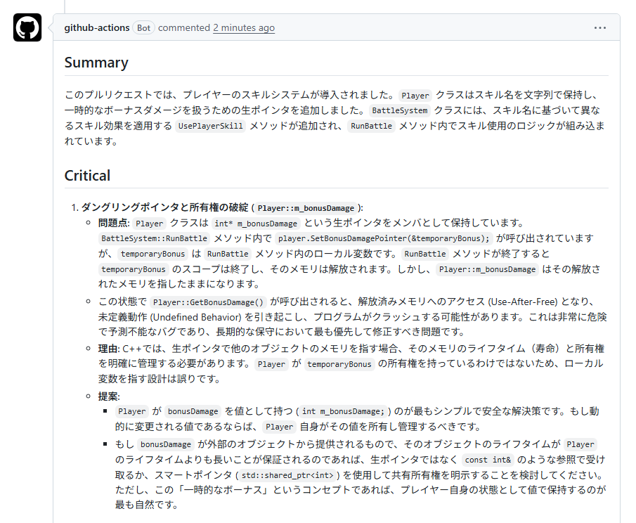
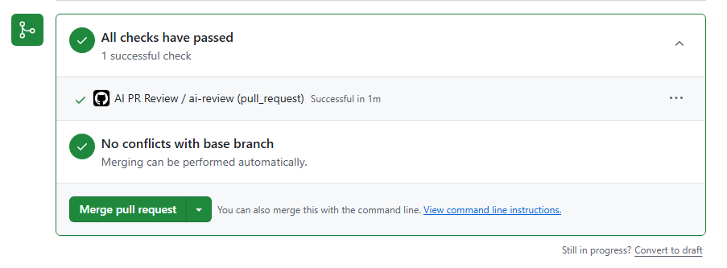

AIレビューコメントを確認する
PRのConversationに、github-actions bot からAIレビューコメントが投稿されていれば成功です。Summary、Critical、Major、Minor などの形式でレビュー結果が表示されます。

ここまでの設定を使ってPull Requestを作成し、AIレビューが動くか確認します。
PRのConversationに、github-actions bot からAIレビューコメントが投稿されていれば成功です。Summary、Critical、Major、Minor などの形式でレビュー結果が表示されます。

PR画面のChecksで、AI PR Review が成功していることを確認します。All checks have passed と表示されていれば、Workflowは正常に完了しています。

Workflowが成功しているのにPRコメントが投稿されない場合は、GitHub Actions の権限設定を確認します。
GITHUB_TOKEN がPRにコメントを投稿できず、GitHub API status: 403 になることがあります。